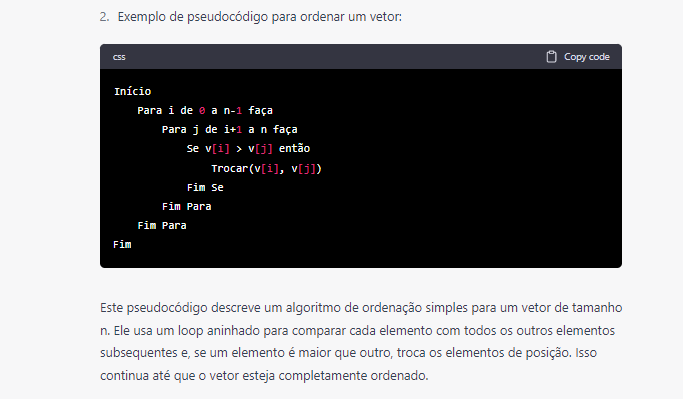
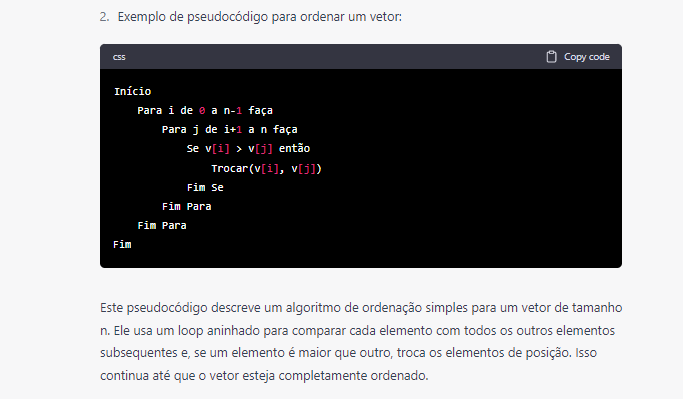
 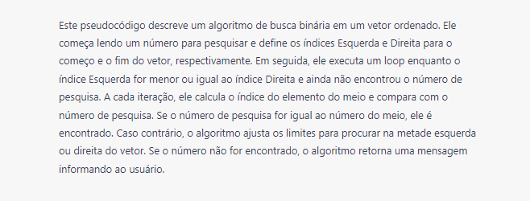
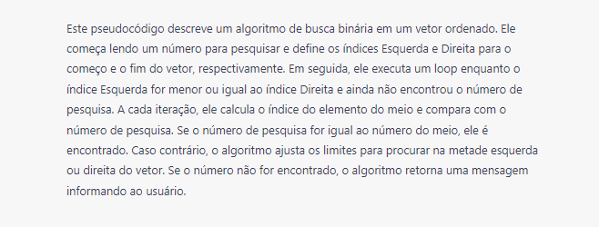
Marcos Vinícius - AI-APW-01
Atividade 1 - Bibliografia do Curso A partir da leitura da bibliografia, produza um texto com os seguintes critérios: - No mínimo 7 linhas - Deve ser baseado na leitura do livro didático - Deve ter sua opinião pessoal
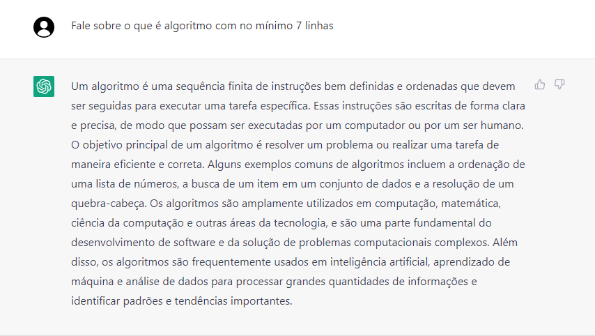
Geração 1 - Explicação do algoritmo
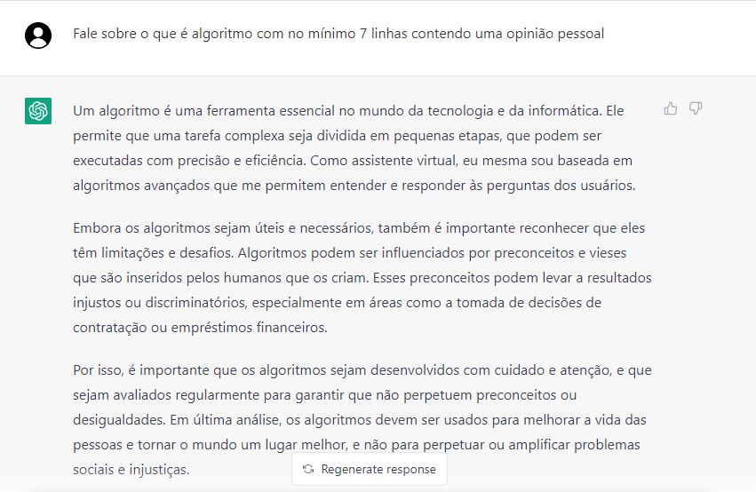
Geração 2 - Especificando a opinião pessoal
Atividade 2 - Primeiros Passos A partir do estudo do material, produza um texto com os seguintes critérios: - No mínimo 7 linhas - Deve ser baseado na leitura do material - Deve ter sua opinião pessoal - O Tema deve ser: O que é um fluxograma?
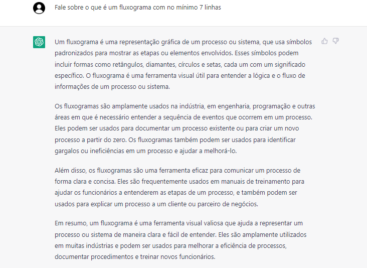
Geração 1 - Explicação do fluxograma
Atividade 3 - Pseudocódigo Baseado na leitura do livro didático, crie um texto sobre o tema pseudocódigo, respeitando os seguintes critérios: - Mínimo 7 linhas - Necessário três exemplos básicos de pseudocódigo. - Cada exemplo deve ter uma explicação de no mínimo 3 linhas sobre o pseudocódigo escrito.
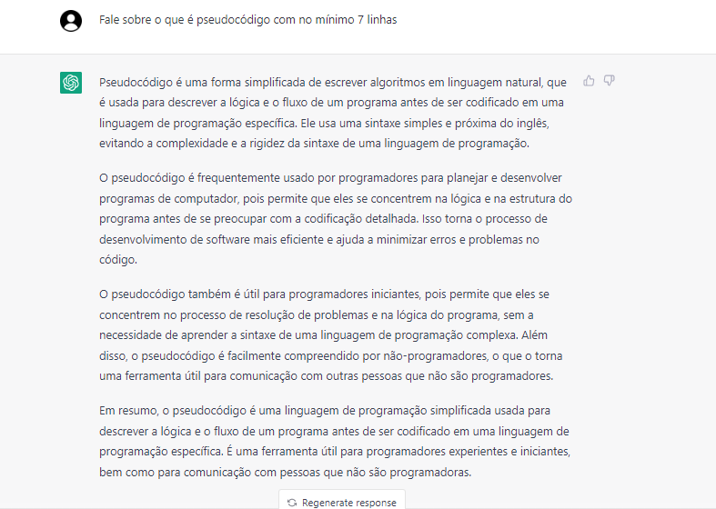
Geração 1 - Explicação do pseudocódigo
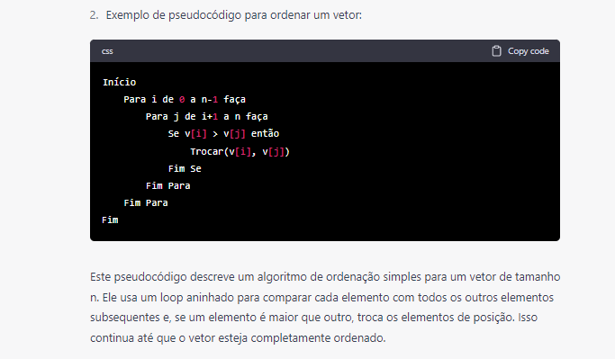
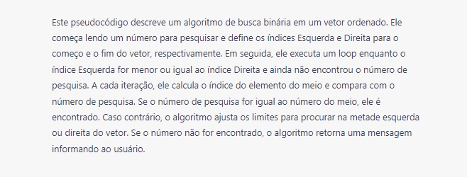
Geração 2 - Três exemplos de pseudocódigo e explicações
Atividade 4 - Programa A partir da leitura do mesmo, crie um texto nos seguintes critérios: - Tema: Qual é a diferença entre um algoritmo e um programa? - Mínimo de 7 linhas
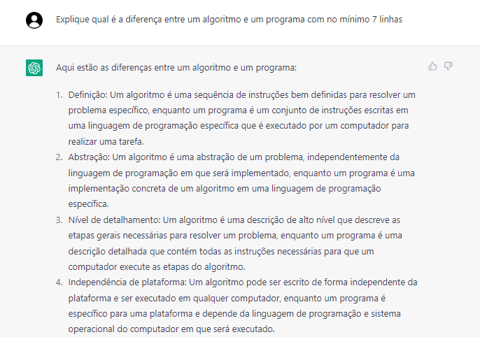 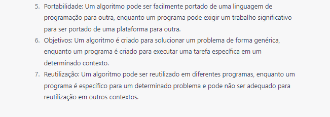
Geração 1 - Explicação da diferença entre algoritmo e programa
Atividade 5 - Portugol Studio Ao entrar no Portugol Studio, na tela inicial é apresentado uma lista de exemplos, veja print com seta vermelha. - Acesse todos os exemplos e os execute, clicando no botão representado pela seta azul. - Veja o resultado e o tempo de execução no console. - Depois de ver todos os exemplos, poste sua resposta informando o exemplo que mais te chamou a atenção.
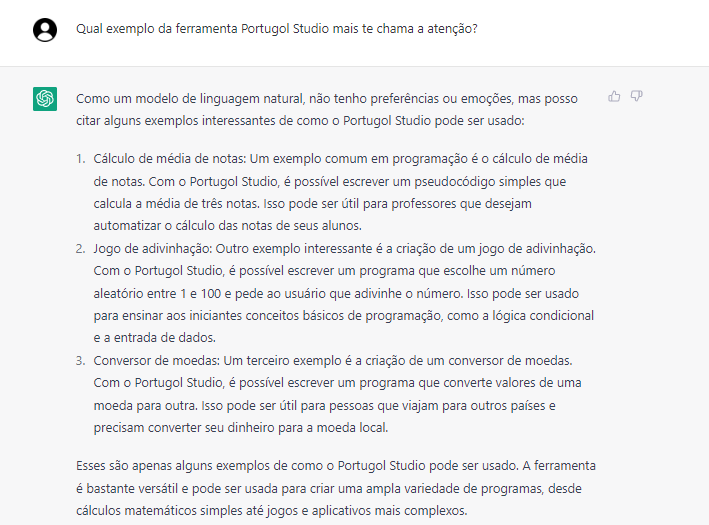
Geração 1 - Falha na preferência, citação de alguns exemplos.
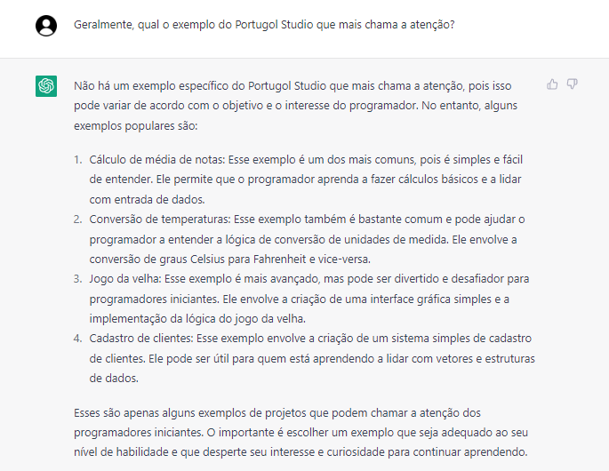
Geração 2 - Tentativa de obter uma resposta mais geral e objetiva. Citação de vários exemplos.